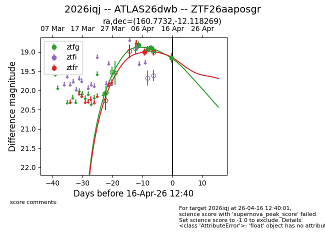
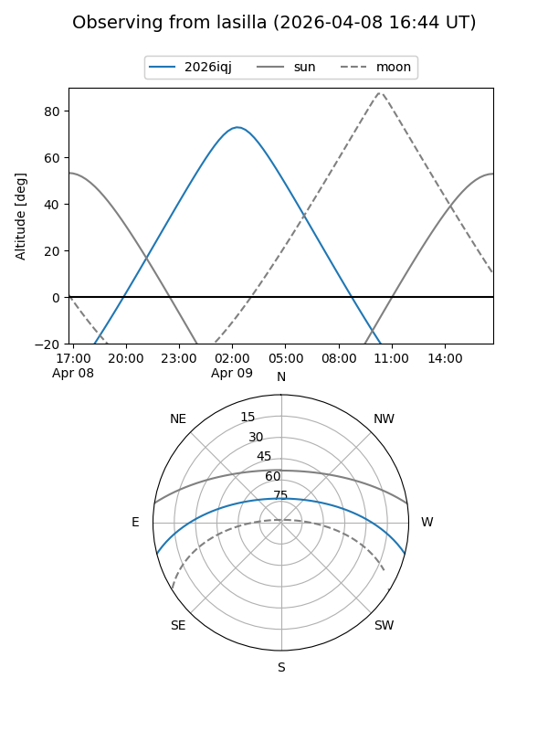
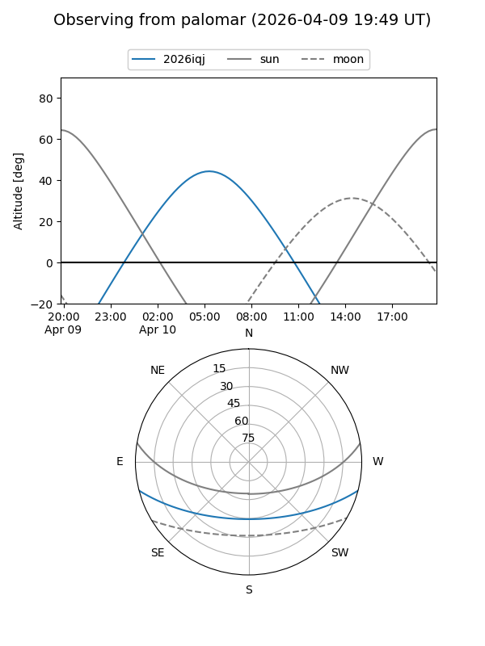
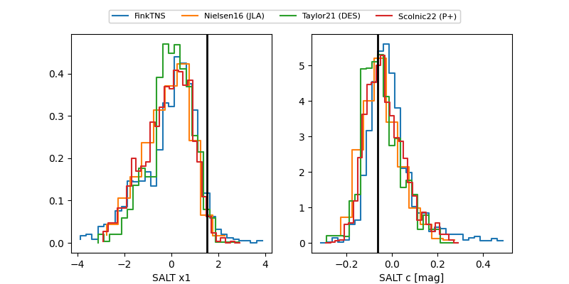

2026iqj
Target 2026iqj at 2026-04-16 12:48
Aliases and brokers:
FINK: link
Lasair: link
ALeRCE: link
TNS: link
YSE: link
alt names
ZTF26aaposgr (ztf,fink_ztf)
2026iqj (tns,yse)
ATLAS26dwb (atlas)
Coordinates:
equatorial (ra, dec) = 160.7732,-12.11827
equatorial (HMS+DMS) = 10:43:05.57,-12:07:05.77
galactic (l, b) = (260.3198,+39.90482)
Flags:
Photometry:
last ztfg=19.16, ztfr=19.00
5 ztfg, 1 ztfr detections
Lightcurve

Visibility


Additional plots
